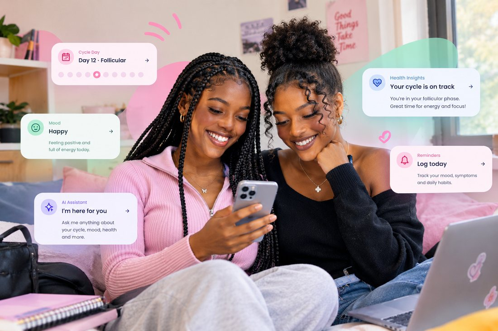

LunaTrack turns a minute of daily logging into predictions, patterns and gentle guidance — built for students and young women who want clarity, not clutter.
Loved by thousands of students tracking smarter

Four small habits LunaTrack makes effortless — so understanding yourself never feels like homework.
Predictions that get sharper every time you log — no generic 28-day guess.
Spot how mood and energy move with your cycle, in your own words.
One gentle daily check-in keeps everything — symptoms, water, notes — in one place.
Patterns surface on their own — you just have to keep showing up.
Ask it anything — it answers using your own logged history, gently and without judgment.
The same calm, clear LunaTrack experience — whether you check in from your laptop between classes or your phone in bed.
"It's the first cycle app that doesn't feel like a chore. Thirty seconds and I'm done."
"The predictions actually got more accurate the longer I used it. Feels built for me."
"Clean, calm, and private. I finally understand my own patterns instead of guessing."